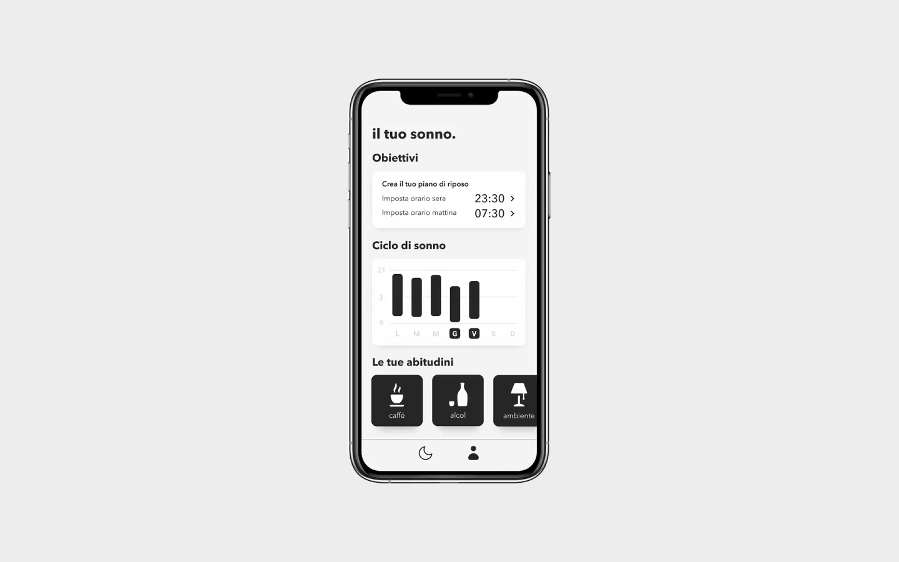

Somnis
Somnis Somnis è un concept di app mobile che aiuta a costruire abitudini di sonno più regolari, accompagnando le persone passo dopo passo.
Gli utenti possono impostare obiettivi di riposo, ricevere promemoria sulle abitudini e seguire i propri progressi attraverso un percorso di gamification.
Video demo
Apri il video demo. Se non riesci a riprodurlo, accedi con Google.
Scheda progetto
Il mio ruolo
Ho seguito ricerca UX, requisiti e interfaccia, dai prototipi di carta al prototipo in Figma, con test formativi e cognitive walkthrough.
La sfida
Tracciare il sonno non basta a migliorarlo. La sfida era tradurre dati e consigli in azioni quotidiane, sostenendo consapevolezza e motivazione nel tempo.
Perché partire dalle abitudini?
01Il progetto nasce dall'interesse per il rapporto tra qualità del riposo, abitudini quotidiane e tecnologia.
Dalla letteratura su privazione e igiene del sonno, dall'analisi di app e smartwatch è emersa un'opportunità: affiancare al monitoraggio una guida concreta e personalizzabile per cambiare abitudini.
Aiutare le persone a capire cosa fare, oltre a mostrare come hanno dormito.
Discovery
02Ho affiancato alla ricerca secondaria un questionario rivolto a gruppi Facebook sull'insonnia, con domande chiuse e aperte su comportamenti, aspettative e necessità.
167 persone hanno risposto al questionario.
Da ricerca, recensioni e risposte sono emerse tre esigenze:
Capire quali comportamenti modificare, perché dati e grafici da soli non indicano un'azione.
Ricevere consigli e promemoria adatti alla propria routine e facili da mettere in pratica.
Costruire consapevolezza e mantenere la motivazione per rendere le nuove abitudini durature.
Le personas riguardano giovani adulti tra i 18 e i 40 anni, distinguendo chi usa già la tecnologia per il sonno da chi non ne conosce l'utilità.
Dalla ricerca alla progettazione
03Come aiutare chi vuole cambiare le proprie abitudini di sonno, ma non sa da dove partire?
Le domande How Might We hanno puntato su tre obiettivi: autoconsapevolezza, motivazione nel tempo e un primo passo semplice.
Ho testato prototipi di carta su 2 utenti con scarsa conoscenza del dominio, rivedendo poi la gamification.
Sui wireframe in Figma, un cognitive walkthrough in autovalutazione ha trovato incoerenze tra azioni e feedback.
La soluzione — Somnis
04Un percorso quotidiano che unisce obiettivi, abitudini e progressi.
La home dà feedback sul piano e suggerisce quando rivedere gli obiettivi.

La sezione Progresso raccoglie piano di riposo, grafico settimanale e quattro abitudini con promemoria giornalieri.
Il tracciamento si basa sull'uso dello smartphone, con un'interfaccia in scala di grigi pensata per prima e dopo il sonno.
Full Process Book
05C'è molto altro dietro Somnis.
La presentazione completa raccoglie ricerca, analisi competitiva, personas, prototipi e test di usabilità.
Vuoi vedere di più?
Puoi scrivermi un’email o su LinkedIn.